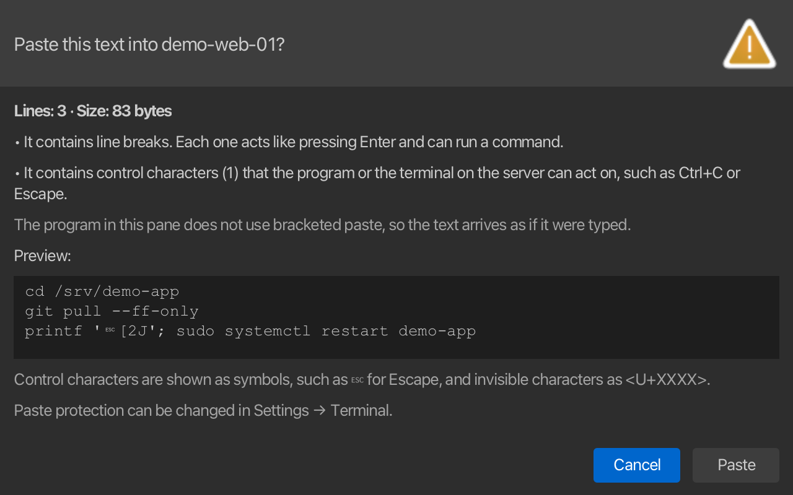

Terminal sessions¶
KorTTY provides a tabbed terminal interface with support for multiple simultaneous SSH connections, split-screen layouts, and interactive terminal management features. This guide covers tab operations, multi-window support, terminal customization, and advanced session features.
Session lifecycle¶
The following diagram shows the terminal tab and session lifecycle, including split-screen and broadcast modes.

Working with tabs¶
Manage multiple SSH sessions with these tab operations:
| Action | Shortcut |
|---|---|
| New Tab | Ctrl+T (Cmd+T on macOS) — opens Quick Connect to start a new session |
| Rename Tab | Right-click a tab and choose Rename Tab…, or use File → Rename Tab… for the active tab. The name you enter replaces the connection's name, or the title the shell set, in the tab title; the coding-agent glyph, the [group] prefix and the (DISCONNECT) suffix stay around it. Leave the name empty, or confirm the name the tab shows on its own, and the tab follows the shell's title and the connection's name again, including later changes to them. While the shell names the tab, entering the connection's name keeps that name in place. A name can be up to 120 characters long; line breaks become spaces, and control characters and the invisible bidi controls that make text read in a different order are removed. The name is saved with a project, and the Coding Agents panel and the Control API's tab.list show it; Duplicate opens the copy under the connection's name. There is no shortcut, so every key stays with the program in the terminal. |
| Title from the shell | A terminal tab shows the title its shell sets, such as user@host: directory, in place of the connection's name, unless you renamed the tab; pointing at it shows the connection it belongs to. See Title from the shell below; it can be switched off in the Window settings. |
| Close Tab | Ctrl+W (Cmd+W on macOS) — closes the active tab. You are only asked to confirm when there is something to lose: the tab has split panes, or a command is still running (a local shell with a running child process, or an SSH session that is not at its prompt). An idle single terminal closes immediately. The tab's close button and Close in the Dashboard ask the same question. The per-connection Close tab without confirmation setting suppresses the prompt entirely. |
| Close Other Tabs / Close Tabs to the Right | Right-click a terminal tab and choose Close Other Tabs or Close Tabs to the Right, or use the File menu entries of the same name, which act around the active tab of any kind. Close Other Tabs closes every other tab of the window, Close Tabs to the Right the tabs after it; the tab you chose stays open and becomes the active tab. An entry is greyed out while there is nothing to close. Instead of one question per tab you are asked at most once, Close N tabs?, with the number of them that have split panes or a command that is still running. Closing only idle terminals and other tabs asks nothing, just like their close buttons, and the Close active terminal windows without confirmation setting on the Terminal settings tab silences the question as it does for Close All Tabs. A file or snippet editor with unsaved changes still asks on its own (Save / Discard / Cancel), and a Cancel at any question keeps every tab open. A running AI chat request or swarm in a closing tab stops, as with its close button. There is no shortcut. |
| Reopen Closed Tab | Ctrl+Alt+Shift+T (Cmd+Option+Shift+T on macOS), File → Reopen Closed Tab or Reopen Closed Tab in a terminal tab's right-click menu brings back the terminal tab you closed last, with a new session to the same connection: its tab group, the name you gave it and its terminal effect come back, its output and its split panes do not. File → Recently Closed lists what you closed in this session, newest first; choose an entry to reopen it, or Clear List to empty the list. Each close is one entry: a single tab (its close button, Close Tab or Close in the Dashboard); all the terminal tabs that one Close Other Tabs, Close Tabs to the Right or Close All Tabs closed, which reopen together; or the terminal tabs of a window you closed while korTTY kept running, shown as Window: …, which reopen in a new window, or in the current one when it has no tabs. On macOS, where korTTY keeps running after you close its last window, File → Reopen Closed Tab and File → Recently Closed in the menu bar open a new window for what they reopen. Tabs whose session ended on their own (exit, Ctrl+D), the tabs that opening a project replaces and everything that closes when you quit korTTY are not listed. The list holds the last 25 closes for all windows together and is kept in memory only, so it is gone when korTTY quits. A reopened tab signs in like Connect in the Connection Manager (see Signing in) and uses the saved connection with the changes you made since, so the server access policy is checked again; a login method you chose for that one session in Quick Connect is not repeated. A Quick Connect session that was never saved reopens with the settings it had. The list never keeps a temporary SSH key, so a session that used one asks for a new key. If you cancel a password, key or vault question, the entry stays in the list. The key works in every tab, also while a terminal has the focus and with the menu bar hidden; when there is nothing to reopen, the status bar says so. |
| Next Tab | ++ctrl+Tab++ |
| Previous Tab | ++ctrl+shift+Tab++ |
| Jump to a tab | Ctrl+1 to Ctrl+8 (Cmd on macOS) select the first to eighth tab of the window and Ctrl+9 the last one, with the digits of the top row or the numpad. The keys work in every tab, also while the terminal has the focus, and a number with no tab at its position does nothing. No digit is typed into the terminal, nor in broadcast mode into the other panes. On Windows and Linux only Ctrl with a digit jumps, so AltGr characters and Ctrl+Shift+6 still reach the terminal; see Keyboard shortcuts for the layout details. |
| Reconnect | Right-click a tab, the terminal area, or a server entry in the Dashboard. If the connection is active, it is closed and re-established immediately; if disconnected, it is re-established. The terminal window stays open. |
| Tab Groups | Right-click a tab to assign it to a named group for better organization; No Group takes it out of its group again. The same menu offers Duplicate, which opens another tab to the same connection and signs in like the Connection Manager (see Signing in). |
| Tab color | A connection with a tab color marks each of its terminal tabs with a colored dot in front of the title and a 3-pixel frame of that color around the terminal, for example red for production servers. The frame surrounds all split panes of the tab and can be switched off in the Window settings; turning it on or off resizes the terminal by 3 pixels on each side. Pointing at such a tab shows a tooltip with the connection and the color by name, which screen readers read for the dot as well. Set the color in the connection editor on the Terminal Settings tab; saving it in the Connection Manager updates the open tabs in every window. A connection without a color of its own can show the color of its stored credential's environment instead. The yellow tab of a connection being made and the dark red tab of a failed or lost connection are unchanged. |
Title from the shell¶
Many shells and programs set a terminal title with the OSC 0 or OSC 2 escape sequence: the default bash of Debian and Ubuntu puts user@host: directory there, and editors or coding agents put the file or the task. A terminal tab shows that title in place of the connection's name, with the coding-agent glyph, the [group] prefix and the (DISCONNECT) suffix around it as usual. A tab with split panes shows the title of the pane that has the focus, and switches when you move to another pane.
- A name you gave the tab with Rename Tab always comes first. Clear that name again and the tab follows the shell's title once more.
- Pointing at a tab named by its shell shows a tooltip with the connection it belongs to:
user@hostand the connection's name. - The server decides this title, so korTTY removes control characters and the invisible bidi controls, caps it at 80 characters and never lets it change the tab color, the colored dot or the frame. Treat the title as a hint; the tooltip and the tab color tell you which connection it is.
- The title is not saved with a project and not kept by Reopen Closed Tab. A reconnect drops it until the new session sets one, and a program that restores the title it found on exit, as
vimdoes, brings back the connection's name when there was none before. - The Coding Agents panel and the Control API's
tab.listreport the title the tab shows. - On Windows, the console behind a local shell can set a title of its own, such as the path of
cmd.exe, as it does in Windows Terminal; switch the setting below off to keep the connection's name.
To keep the connection's names on every tab, switch off Name terminal tabs after the title the shell sets in the Window settings; the open tabs of every window follow as soon as you save.
Connecting safely¶
Interactive SSH terminals share host-key trust with SFTP and the SSH bootstrap used by Mosh. The first connection to a normalized host and port shows the key algorithm and OpenSSH SHA-256 fingerprint with No selected by default. After you verify and accept it, exact matches connect silently; a changed key is hard-blocked with no automatic retry, and the alert offers Review and Replace… for a key you have verified with the server administrator. See SSH host-key verification.
Opening a same-server or newly selected connection in a split shows a progress dialog while the SSH handshake runs on a worker. The interface remains responsive for both the host-key confirmation and keyboard-interactive authentication prompts.
Split Right (new connection) and Split Down (new connection) follow your organization's server access policy like Quick Connect: if the server you pick or its jump server is blocked, korTTY shows the policy message right away, before it asks for a password or saves the connection, and opens no pane. Split Right (same server) and Split Down (same server) check the policy again: a tab opened from a saved connection can pick up later edits of it, so if its server or jump server was edited to a blocked one after the tab opened, the split shows the same message and opens no pane.
Some failures are refused outright rather than retried, because repeating the attempt cannot change the outcome — a changed host key, an SSH key file that is missing or cannot be read, a jump server whose stored password cannot be used (for example while the vault is locked) or whose setup is incomplete, a Mosh connection configured with a jump server, or a missing Mosh runtime. The terminal clears and shows the reason immediately instead of working through the retry count. See Jump server for the jump-server cases and the Mosh restriction.
KorTTY's pinned SithTermFX build also includes a reviewed bottom-row boundary fix: moving over a hyperlink or the final visible terminal row no longer asks TerminalTextBuffer for the non-existent row at line == height.
Connection loss and automatic reconnect¶
When an established SSH connection is lost — network drop, VPN cut, server gone — the tab does not close. It switches to a red disconnected state instead: the tab title gets a (DISCONNECT) suffix, the tab turns dark red, a red status bar shows the time the connection was lost, and the terminal cursor stops blinking so a dead session no longer looks alive. Only a normal remote logout (typing exit, or Ctrl+D at the prompt) closes the tab.
KorTTY notices a silent transport death within about ten seconds: every few seconds it sends an SSH liveness probe (a global request the server must answer, the same technique as OpenSSH's ServerAliveInterval) and treats two consecutive unanswered probes as a lost connection. The probe only arms itself after the server has answered once, so servers that never reply to such requests keep their sessions untouched. This is independent of the SSH keep-alive heartbeat, which keeps idle connections open but does not detect a dead one.
To pick the session back up in the same tab, double-click the red status bar or the red tab, or use Reconnect in the tab, terminal, or Dashboard context menu. In a split tab, panes whose connection died close individually; the last remaining pane keeps the tab open and carries the reconnect offer.
With Automatically reconnect lost connections enabled (Settings → Terminal, on by default), the tab reconnects on its own: attempts start after 3 seconds and back off through 5, 10, 20 and 30 seconds up to one attempt per minute, and the red status bar counts down to the next attempt. A successful reconnect, a manual reconnect, or closing the tab ends the automatic attempts. Permanent failures — authentication, host-key verification, configuration refusals — stop them too, so a wrong password is never hammered against the server. While a session journal is running, its red decision bar takes precedence and no automatic attempt starts — the journal asks whether to reconnect and continue or to end with its closing summary. See Settings → Terminal for the setting.
Multi-window support¶
Open additional windows to organize connections by project or environment:
- New Window: Ctrl+Shift+N (Cmd+Shift+N on macOS) opens a new KorTTY window. Each window can have its own set of tabs and connections.
- Move tabs between windows: Drag a tab from the tab bar and drop it onto another KorTTY window's tab bar to move that tab (and its session, including any split terminals) into the other window.
- Reorder tabs: Drag a tab within the same window to change its order; the "+" tab stays at the end.
Terminal context menu¶
Right-click inside a terminal to open its context menu; in a split tab it acts on the pane you clicked. The menu starts with the editing commands below; when you right-click a link, Open Link and Copy Link Address come before them, and on a link to a file Open File in Snippet Editor and Copy Path (see Links in terminal output):
| Entry | What it does |
|---|---|
| Copy | Copies the selected text to the clipboard and keeps the selection. Greyed out while nothing is selected. |
| Paste | Sends the clipboard text to the session, the same way the paste shortcut does (see Pasting text). |
| Clear Buffer | Clears the scrollback and the screen but keeps the prompt line. While a full-screen program such as vim or less is running, it does nothing. |
| Find | Opens the find bar at the top right of the pane, the same as Edit → Find... (Ctrl+F, Cmd+F on macOS). Type to highlight matches, press Enter or Down for the next match and Up for the previous one, and Esc to close the bar. |
Below them come the entries of other features, in this order and some only where they apply: Show Menu Bar (while the menu bar is hidden), Open in Snippet Editor, the AI submenu, the session-journal screenshot and note entries, Theme, Highlighting (see Keyword highlighting), Terminal Effect, Reconnect and Show Command Timestamps. The Extras submenu at the end holds Split Terminal, Font Size (see Font size and zoom) and Broadcast Mode.
Pasting text¶
Every way of pasting into a terminal goes through korTTY: Edit → Paste, Cmd+V on macOS, Ctrl+Shift+V on Windows and Linux, Paste in the right-click menu, a middle-click, which pastes the X11 primary selection on Linux and the clipboard elsewhere, and text you drop onto a pane. The text goes to the pane you paste into, and its line breaks arrive as Enter, the way they do when you type them.
When the program in the pane has switched on bracketed paste, as bash, zsh, fish and most editors do while they wait for input, korTTY wraps the text in the bracketed-paste markers. The program then receives it as one pasted block instead of typed keys, so a line break in it does not run a command on its own. Bracketed-paste markers inside the text itself are removed first, including the 8-bit form that a single-byte character encoding sends, so text copied from a web page or a file can neither end the paste early nor have its remaining lines run as typed commands.
After a reconnect, and after a terminal reset (the reset command, or ESC c in the output), a pane does not use bracketed paste until its program switches it on again, so pasted line breaks act as Enter until then. A Mosh connection that recovers from a network interruption continues the same session and keeps the state.
Paste protection¶
Some pastes ask before they reach the pane. korTTY then shows what you are about to paste, and nothing is sent until you choose Paste. Which pastes ask is set under Settings → Terminal → Paste protection (see Terminal settings):
- Line breaks: by default a paste with a line break asks unless the program in the pane uses bracketed paste, because each line break would then act as Enter and run a command. A single line that ends in a line break asks as well, since it would run at once. With Always, every paste with a line break asks, bracketed or not; with Off, none does.
- Control characters: a paste that contains control characters, such as Escape, Ctrl+C or Ctrl+Z, or invisible characters that change the text direction asks whenever the warning is not Off, even when the program uses bracketed paste. The terminal on the server acts on Ctrl+C, Ctrl+Z and Ctrl+S before the program sees the paste, and direction-changing characters make text look different from what is sent. Ordinary text never contains them.
- Size: a paste larger than 5 KiB asks, whatever the warning setting, because a large paste can flood a slow program or device and is hard to check. Set the size to 0 to turn this check off.

The dialog names the pane by the connection it runs, which for a pane opened with Split Right (new connection) or Split Down (new connection) can be another server than the tab's, and shows the number of lines and the size, lists why it asks, and says whether the program in the pane uses bracketed paste. Its preview shows the start of the text, with control characters as symbols (such as ␛ for Escape) and invisible characters as <U+XXXX>. It also says when the text comes from the middle-click selection, when bracketed-paste markers in it are removed, and when broadcast mode is on: a paste always goes only to the pane you paste into. Copy in the preview's right-click menu follows the enterprise policy's internal clipboard mode.
Cancel is the default button and has the focus, so Enter, Space and Esc all drop the paste and typing ahead can never confirm it. Click Paste to paste, or press Tab to reach it and Space to press it. A second paste into the same pane while the dialog is open is ignored, and a paste you confirm after the pane has reconnected is dropped instead of reaching the new session.
Bracketed paste is what the server says
Whether the program uses bracketed paste is what the program on the server tells the terminal, and any output can claim it: a crafted file you cat, or a login message, can switch it on in a shell that does not handle it, such as sh or the console of many network devices. Pasted line breaks then run as commands without a warning. If you work on production servers, choose Always.
Pasting into slow devices¶
Switches, routers, console servers and other devices behind SSH can lose input that arrives faster than they read it, so a pasted configuration arrives with characters or whole lines missing. Set Pause after each pasted line under Settings → Terminal → Paste protection (0 to 1,000 ms; 0, the default, turns it off) and korTTY sends a paste with several lines one line at a time, with that pause after each line. A single line still goes out at once, and a paste that asks for confirmation is paced after you choose Paste.
While the lines are sent, the bottom right corner of the pane shows how far the paste is, such as Pasting line 3 of 40 · Esc stops. The pane takes no keyboard input meanwhile, so nothing you type lands between two pasted lines; on macOS, Cmd shortcuts keep working, and the pane's find bar still takes what you type. Press Esc to stop the paste: the remaining lines are not sent. When the program in the pane uses bracketed paste, the paced lines still arrive as one pasted block, and stopping ends that block, so the lines already sent stay in the program's input line without running.
A new paste into the pane is ignored until the paced one is done, and in broadcast mode the keys you type in the other panes are not sent into it. Closing the pane, a reconnect and closing the tab stop the paste.
Dropping text¶
Drag text from another application, such as a browser or an editor, or from another korTTY window, and drop it onto a terminal pane to paste it there. It goes into the pane under the pointer, which need not be the pane you were typing in, and that pane becomes the focused pane. Dropped text is a paste like any other: bracketed-paste markers in it are removed, paste protection asks first when its rules say so, with a note in the dialog that the text was dropped onto the terminal, and a line delay paces it. The text is always copied, so the application you drag it from keeps it. A pane that is not connected, or is still pacing a paste, does not take the drop.
Dropped files are copied to the server over SFTP instead, in SSH tabs. A drag that carries files together with their path as text, as one from Finder or Explorer does, copies the files and never pastes the path. Both need Allow drag and drop into the terminal under Settings → Terminal (on by default); with it off, the terminal takes neither files nor text. With the enterprise policy's internal clipboard mode, text dragged from another application is refused, as a paste from the operating system clipboard is, while text dragged within korTTY is still pasted.
Links in terminal output¶
Programs can print clickable links into the terminal with the OSC 8 escape sequence; GCC, for example, can link a warning to its documentation. To open such a link, hold Cmd (macOS) or Ctrl (Windows and Linux) and click it: it opens in your default browser, or a mailto link in your mail program. Only http, https, ftp, ftps and mailto links open in the browser or mail program (file: links open as text in the Snippet Editor, see below), and a mailto link may only fill in recipients (to, cc, bcc), subject, body and in-reply-to.
The same click opens a web or e-mail address that a program prints as plain text, such as the address in a log line, a compiler message or a git push hint: a web address opens in your default browser, and an e-mail address such as ops@example.com opens as a new mail to it. A full stop, comma, quote or closing bracket right after an address is not part of it, and an address that wraps onto the next rows is found from any of its rows. KorTTY looks for the address only when you click, in the text the terminal shows at that moment, so an address that a program printed in several pieces opens whole, and printing output does not get any slower. It reads at most 16 rows above and below the click (fewer in a very wide terminal) and leaves an address that runs on beyond them alone rather than opening it cut short. What the paragraphs below say about clicking a link and about links that never open applies to these addresses too. To turn this off, clear Detect web addresses, e-mail addresses and file paths in terminal text in Settings → Terminal → Links; links marked up with OSC 8 keep working.
In SSH and local-shell tabs the same click opens a file path that a program prints, such as /var/log/syslog, ~/notes.txt, ./build.gradle.kts or the src/main/App.java:42:7 of a compiler message, as text in the Snippet Editor. A relative path needs a / and a file extension or a line number, so words such as and/or or 24/7 stay plain text, and a line and column after the path (:42, :42:7, (42,7)) are not part of the file name. KorTTY reads the file on the machine the session runs on: over SFTP in an SSH tab, from your disk in a local-shell tab. A relative path is resolved against the shell's current directory at the moment you click (~ against your home directory), so after a cd the same text can name another file; the Snippet Editor shows the full path it opened. Only a regular UTF-8 text file of at most 10 MB opens; for a directory, a missing file, a binary file or a larger one KorTTY says why instead. Network paths such as \\server\share\x or //server/share/x, device paths and another user's home directory (~user/...) never open, so a click cannot make Windows sign in to a server named in the output. Path links follow Open in Snippet Editor: the enterprise policy that removes that entry turns them off too, its read-only mode keeps the file from being written back to the server, and after su or an inner ssh KorTTY refuses to open the file instead of reading it as the wrong user. Mosh tabs have no file links.
OSC 8 file: links, such as the ones ls --hyperlink, eza --hyperlink or rg --hyperlink-format=default put on file names, open the same way in SSH and local-shell tabs, but read-only: the program that printed the link chose the file behind its text, so the Snippet Editor keeps Overwrite and Save as... locked and only lets you save the text as a snippet. Such a link opens only when it names no host, localhost, or the host the session runs on: the host the tab connected to, the host its prompt shows, or for a local shell the name of this computer (a short name such as web01 matches web01.example.com). A link to another host, to a network share (file:////server/share/...) or with control characters in its path does not open, and in Mosh tabs every file: link stays plain text.
A link opens only on a single Cmd / Ctrl click that does not move the mouse between pressing and releasing the button. A plain click on a link does nothing, so a click that only puts the focus into a pane never opens a page. A double-click on a link selects its word and a triple-click its line, as on other text, and neither a Cmd / Ctrl double-click nor a selection you drag across the screen opens the link it ends on. Ctrl+Alt and a click does not open a link either, because Windows reports AltGr as Ctrl+Alt. The modifier click also works while a program such as tmux or vim uses the mouse.
Every other link stays plain text and does nothing when clicked: news:, javascript: and data: links, mailto links with any other field (some mail programs attach the local file an attach field names), and links that contain spaces, control characters or invisible direction-changing (bidi) characters or are longer than 8 KB. Whatever prints a link chooses where it points — a server, a log file you cat, a program's output — so KorTTY never passes a link to the operating system's file opener, which would start programs and scripts: a file only ever opens as text in the Snippet Editor.
Linked text is drawn in the colors the program chose for it, not in the terminal's default text color, and is underlined while the mouse is over it. Two limits remain on screen: a color change in the middle of a link is ignored, and bold, italic and inverse video are not shown on linked text. Terminal recordings keep the bold and inverse video of linked text.
Rest the mouse on a link to see where it goes before you open it. The pointer turns into a hand and the link is underlined, a web or e-mail address printed as plain text included, and after half a second a tooltip shows Cmd+click to open (macOS) or Ctrl+click to open (Windows and Linux) and the address the link really opens. For a file the tooltip says Cmd+click to open in the Snippet Editor or Ctrl+click to open in the Snippet Editor and shows the path, or for an OSC 8 file: link its full file:// target. For a link marked up with OSC 8 the tooltip is the only place that shows its target, because the program can print any text it likes for it. The tooltip writes an international host name in its xn-- form, so a letter from another alphabet that only looks like a Latin one stands out, and it shows spaces, control characters and invisible direction-changing (bidi) characters as % codes; a very long address is shortened at the end, but its host is always shown in full. An address KorTTY does not open, such as an e-mail link with an attach field or a file: link to another host, gets no hand, and its tooltip says that KorTTY does not open it. The underline and the tooltip disappear when you move off the link, drag a selection, scroll, type or switch to another window, and they follow the text when new output moves it.
When the text of an OSC 8 link is itself a web address on another host than the link opens, for example https://example.com/login printed for a link to https://login.example.net/ or to a file: path, a Cmd / Ctrl click asks before it opens the link. The question names the host the text shows and the address the link opens, in the same form as the tooltip, and Cancel is the default button, so pressing Enter does not open the link. Host names are compared without regard to case, a final dot or a leading www., and a link whose text is not a web address, such as a word or a file name, never asks.
Instead of holding a key you can right-click a link: the context menu then starts with Open Link and Copy Link Address. Open Link opens the link exactly as a Cmd / Ctrl click does, including the question above for a link whose text shows another host. Copy Link Address copies the address to the clipboard: for an OSC 8 link the address it really opens, in the form your browser receives (an international host name in its xn-- form, as in the tooltip, but never shortened), not the text the program printed for it; for a web or e-mail address printed as plain text the address as printed, so an e-mail address is copied without mailto:. With the enterprise policy's internal clipboard mode the address stays inside KorTTY. On a link to a file the two entries are Open File in Snippet Editor, which opens it as a Cmd / Ctrl click does, and Copy Path, which copies the path without a line number after it; for an OSC 8 file: link that is the path the link really opens, not the text the program printed. The menu acts on the link under the pointer at the moment you pressed the right mouse button, so new output that arrives before the menu opens does not change it, and it works while a program such as tmux or vim uses the mouse. A link that KorTTY does not open, such as an e-mail link with an attach field or a file: link to another host, gets neither entry.
Quick select¶
Quick select copies or opens what the terminal shows without the mouse. Press Cmd+Shift+Space (macOS) or Ctrl+Shift+Space (Windows and Linux), or choose Edit → Quick Select: KorTTY puts a box around every web address, file path, e-mail address, UUID, IP address (IPv4 with an optional port, and IPv6), git commit hash and number of four or more digits that the focused pane shows, and a label of one or two letters over its first characters. Type a label to copy its text to the clipboard; Copied shows over it for a moment. Hold Shift while you type the label's last letter to open a web address in your browser, an e-mail address as a new mail or, in SSH and local-shell tabs, a file path in the Snippet Editor, exactly as a Cmd / Ctrl click on it does; Shift with the label of anything else copies it like the label alone.
The labels start at the bottom row, so the newest output gets the first ones. Up to 26 different texts each get one letter, home row first (a, s, d, f, ...); with more, every label has two letters, and the first letter you type hides the labels that do not start with it, while Backspace takes it back. The same text shown in several places gets one label, and at most 676 different texts get one. A letter that no label continues with is ignored. Labels use the keys, not the characters they type, so Caps Lock never turns a copy into an open.
Esc ends quick select without doing anything, and so does any key that is no label letter, such as an arrow key, Enter, Space, a digit or a letter with Ctrl, Alt or Cmd. Clicking into the pane, scrolling, switching to another tab or window, resizing the pane and changing the font size end it too. Shift, Ctrl and the other modifier keys on their own change nothing, and holding the keys that started quick select does not start it again. When the program prints over a marked text while quick select runs, that text loses its box and label and the others keep theirs; when nothing is left, quick select ends.
While quick select runs, nothing you type reaches the program in the pane: not the label letters, not the characters they would type, not the text of an input method for Chinese, Japanese or Korean, and in broadcast mode not the other panes either. Copies go through KorTTY's clipboard, so the enterprise policy's internal clipboard mode keeps them inside KorTTY. Quick select reads the rows the pane shows at its scroll position, the scrollback included when you scrolled back, and leaves out a text that runs on above the top or below the bottom row rather than offering it cut short. It does not depend on Detect web addresses, e-mail addresses and file paths in terminal text in Settings → Terminal → Links. It needs a terminal tab: in a snippet editor or file editor tab Cmd+Shift+Space / Ctrl+Shift+Space stays with the editor and Edit → Quick Select is disabled. When the keyboard is in a side panel of a terminal tab, such as the AI chat, the shortcut goes to that panel first, and Edit → Quick Select starts quick select from there.
Font size and zoom¶
Adjust the font size of the active terminal on the fly without reconnecting:
| Shortcut | Action |
|---|---|
| Alt++ | Zoom in (increase font size) |
| Alt+- | Zoom out (decrease font size) |
| Alt+0 | Reset zoom to saved/default font |
| Ctrl + mouse wheel | Zoom in/out over the terminal (Cmd + wheel on macOS) |
Holding Ctrl (or Cmd on macOS) and scrolling the mouse wheel over the terminal changes the font size — wheel up enlarges, wheel down shrinks — instead of scrolling the buffer. This complements the Alt++ / Alt+- / Alt+0 shortcuts.
Reset zoom restores the font size and family to what the connection had when you opened the tab (or the connection's saved settings, or the global default). The terminal context menu has the same controls: right-click → Extras → Font Size → Increase, Decrease (two points per step) or Reset. The zoom level applies to the current tab — all of its split panes change together — and leaves other tabs unchanged.
Background transparency¶
View → Zoom → Background Transparency is a slider (0–100 %) that makes the terminal background see-through to the desktop while the text stays fully opaque and sharp. At 0 % the background is solid; higher values let more of the desktop show through. The value is saved and restored across restarts.
Only the terminal area becomes transparent — the title bar, menu bar, status bar and any tab without a terminal stay solid, so the window never turns into a see-through hole.
Horizontal, vertical and nested split terminals inherit the active transparency level, including panes added after transparency was enabled. Entering fullscreen with F12 or terminal-only fullscreen with Ctrl+Shift+F temporarily renders the terminal area opaque without changing the saved value; leaving fullscreen restores that value to every pane.
Because a see-through window uses a different window style that the operating system fixes when the window opens, switching transparency on or off (crossing 0 %) only takes full effect after a restart; the status bar shows a hint when you cross that threshold. Adjusting the level while already in transparent mode applies live. In transparent mode the window uses a lightweight custom title bar (drag to move, buttons to minimise/maximise/close, double-click the strip to maximise, drag the edges to resize).
The slider lives in the in-window menu bar only (the native macOS menu bar cannot host a slider).
Local shell tabs¶
Besides SSH and Mosh, a terminal tab can host a Local Shell — the local machine's own shell, opened via a pseudo-terminal (see Local Shell). A few terminal behaviors are local-shell aware:
- Ctrl+D closes the tab for local cmd.exe/PowerShell sessions. Those Windows shells do not exit on EOF, so Ctrl+D would otherwise have no effect. For bash-family shells (Git Bash/Cygwin/WSL, macOS/Linux) and SSH, Ctrl+D keeps its normal EOF meaning — the shell exits and the local tab then auto-closes.
- Close confirmation uses local-shell wording rather than "End SSH connection?", and the window-close prompt is transport-neutral ("Active sessions"), since one window can mix SSH, Mosh and local-shell tabs.
- The current directory follows the interactive shell. On macOS and Linux, korTTY refreshes it from the local shell process; native PowerShell and cmd prompts supply absolute Windows paths. After
cd,pushd,popd, orSet-Location, Open in Snippet Editor resolves a selected file name against that current directory instead of the tab's start directory. If the directory cannot be determined or mapped safely, korTTY stops with an error rather than opening a same-named file from the wrong directory. - After an identity switch, Open in Snippet Editor is greyed out. When the session no longer runs as the identity the tab was opened with — after
su, an innerssh, or a shell-openingsudo— the context-menu entry is disabled, in SSH tabs as well as local-shell tabs: the tab's tracked directories and file access still belong to the original login and would resolve the wrong path. The entry re-enables on its own once the prompt shows the original user again (typically afterexit). A local-shell tab whose configured shell command is itself a remote client such assshormoshkeeps the entry disabled for the whole tab. If the load is triggered anyway, korTTY stops with an error instead of resolving the wrong path. The AI context-menu actions follow the same rule: they no longer offer to attach the selected file name's content (see Attaching a selected file to the chat). - Clipboard text is preserved in agent shortcuts. Typed and pasted text travel through the same terminal-input filter, including bracketed paste and split UTF-8 input, so a pasted file name remains part of the
agent ...request and Enter dispatches it exactly once. In a connection with a single-byte character encoding such as ISO-8859-1, every typed character is sent at once.
Session journal¶
Every terminal tab can keep a session journal: server output and typed commands go into a capture log, an AI condenses them into a readable timeline, and screenshots and notes can be added from the journal bar or the terminal's right-click menu. Journals start automatically for connections that enable them, or retroactively for a running session via Tools > Start/Stop Session Journal — the existing scrollback is imported. See Session journal.
Split-screen with broadcast¶
Split the terminal view to display multiple connections side by side, and optionally send input to all panes at once.
Split operations¶
- Split Pane: Create horizontal or vertical splits within a tab via the context menu or keyboard shortcuts.
- Independent Sessions: Each pane can show a different SSH connection.
- Resizable Panes: Drag dividers to adjust pane sizes.
- Close Pane: the × in a pane's top-right corner, Extras → Split Terminal → Close Split in its context menu, or
exitin its shell closes that pane. The × shows only while the tab has more than one pane, and Close Split is disabled in the last one; typingexitin the last pane closes the tab. - Focused pane: Edit → Copy, Edit → Paste, Edit → Find..., the AI actions and a recording of the active split act on the pane that has, or last had, the keyboard focus, the one your typing goes to, however the focus got there (a click, a middle-click or a jump from the Coding Agents panel). Closing another pane leaves them on that pane; when the focused pane itself closes, they move to the first remaining pane. The terminal's right-click menu acts on the pane you right-clicked.
- Access reason asked once per tab: when a server asks for a reason for the connection, as a CyberArk-style jump host does, a split does not ask again. korTTY sends the reason that was given when the tab was opened, because a server that asks for one closes a session that answers with nothing. A split to a different server, or a server asking something else, is asked once as well, and a new tab always starts by asking. If the server refuses the reason, for example because a ticket number has expired in the meantime, korTTY drops it and asks again on the next attempt.
- Move Panes: Hold Shift+Alt (Windows/Linux) or Shift+Option (macOS) and drag a pane onto another to reorder. Without the modifiers, mouse drag is used for text selection in the terminal.
Broadcast mode¶
When Broadcast Mode is enabled, keyboard input is sent simultaneously to all visible panes. This is useful for running the same commands on multiple servers.
- Mirrored: typed text, Enter, Backspace, Esc, Tab and Shift+Tab, the arrow keys, Home / End, Page Up / Page Down, Ins / Del and F1 to F11, including their Shift, Ctrl and Alt combinations (F12 toggles fullscreen).
- Encoded for each pane: every pane receives a key the way its own program expects it. When one pane runs
mcorvim, which switch the terminal to application cursor keys, its arrows arrive asESC O Awhile a shell in the next pane getsESC [ A, so history and completion work in both. - Kept local: the scrollback keys (Shift+Page Up / Shift+Page Down, and Ctrl+Up / Ctrl+Down on Windows and Linux or Cmd+Up / Cmd+Down on macOS) scroll only the focused pane. A full-screen program such as
vimorlesshas no scrollback, so while one runs in the focused pane, Shift+Page Up / Shift+Page Down (and Ctrl+Up / Ctrl+Down on Windows and Linux) go to that program and, like the other keys, to every other pane. - Not mirrored: paste and snippets go only to the focused pane, and what you type into the find bar stays in the find bar.
- A pane that is pacing a paste is left out: while a pane sends a paste line by line (see Pasting into slow devices), the keys you type in the other panes are not sent into it, so none of them lands between two pasted lines.
- A stalled pane does not freeze korTTY: the keys for the other panes are sent in the background, to each pane in the order you typed them, so a server that stops responding holds up only its own pane while the window and the other panes keep reacting.
Terminal effects¶
Terminal effects can change the visible terminal style and output animation. Effects are Java plugins managed from Plugins > Terminal Effects.
User controls¶
- Current terminal: Use View > Terminal Effect or the terminal context menu to choose an effect for the active terminal.
- Quick Connect: Choose the effect and speed before opening a temporary or saved connection.
- Connection Manager: Store the effect and speed on a saved connection so new tabs use it automatically.
- Speed: Use the slider for
1xthrough10x; if that is still too slow, type a custom value up to99xin the numeric speed field.
Plugin management¶
- Open Plugins > Terminal Effects to manage plugins.
- The table lists loaded plugins with active state, name, and description.
- Disable a plugin to keep it installed but unavailable for activation.
- Import external
.jarplugins. KorTTY copies them into~/.kortty/plugins. - Export plugins that have a source JAR. The bundled MOTHER effect is exportable.
Warning
Imported terminal-effect plugins are trusted Java code and are not sandboxed. Only import plugins from sources you trust.
For detailed plugin development documentation, see Terminal effect plugins.
SSH keep-alive¶
Prevent connections from dropping due to inactivity by configuring SSH keep-alive messages:
- Enable SSH Keep-Alive in the connection's Terminal tab or in Settings > Terminal.
- Set the interval (5 to 600 seconds, default: 60).
- KorTTY sends
SSH_MSG_IGNOREheartbeat messages at the configured interval and enables TCP socket keepalive while the option is active.
Note
If a server, firewall, VPN, or NAT gateway closes idle sessions sooner than the configured interval, the connection can still end. In that case, check the server-side SSH configuration and network idle-timeout settings as well as the KorTTY log.
Terminal logging¶
Writes a connection's terminal output to a file, for audit and debugging. This is independent of the Session Journal: it is a plain transcript with no summaries, markers or screenshots, and the two can run at the same time.
Configure it in either place:
- Connection Manager > Edit connection > Logging for a saved connection.
-
Quick Connect > Terminal log for a one-off session, or to change the setting for the connection you are about to open.
-
Enable logging.
- Choose a log folder. Left empty, KorTTY uses
~/.kortty/terminal-logs. You pick the folder; the file names are KorTTY's. - Choose a log format:
- Plain Text - One timestamped line per line of output.
- XML - Structured XML with timestamps.
- JSON - Structured JSON with timestamps.
- Optionally adjust the maximum file size (default: 10 MB) and the retention period (default: 30 days), and turn off Start a new file every day or Compress closed files (gzip) — both are on by default. Quick Connect's Terminal log section covers enable, folder, format and compression; size limit, retention and daily rotation keep their configured or default values.
File names¶
Every file is named <date>-<time>-<server>_<number>, for example 2026-08-04-14-30-12-web01_1.log.gz. The date leads so a folder listing sorts chronologically, and the trailing number distinguishes connections that are open at the same time — two tabs on the same server get _1 and _2 and never write into one another's file.
Rotation, compression and retention¶
By default a new file is started every day, and always again whenever the maximum size is reached (those parts are numbered .p2, .p3, …); daily rotation can be turned off to roll only by size. Nothing is ever overwritten or deleted by rotation.
Closed files are gzipped by default; the file currently being written always stays uncompressed so that a crash cannot truncate it. Turn off Compress closed files (gzip) to keep finished files as plain text instead. A connection that produces no output creates no file at all.
Files older than the retention period are deleted automatically when a connection starts and after each daily rollover. Set the retention to 0 to keep everything. Only KorTTY's own log files are ever removed — anything else in the folder is left alone, so it is safe to point the setting at a folder you also use for other things.
What is removed before writing¶
Captured lines go through the same redaction as the Session Journal, on the capture thread, before anything is buffered or written: the connection's own password and any replacement rules your organisation's policy defines. The secret never reaches the file, so there is nothing to clean up afterwards.
Log files and a log folder KorTTY created itself are set to owner-only permissions where the filesystem supports it. A folder you chose yourself is left with the permissions you gave it.
Redaction only covers what KorTTY knows
A password KorTTY stores for the connection is redacted. A secret you type into a command yourself, or one a program prints, is not — KorTTY has no way to recognise it. Treat the log folder as sensitive, and use policy replacement rules for patterns that recur.
Terminal recording¶
Terminal recording is designed as a low-resource replay feature. KorTTY records terminal screen-state changes and timing events into one JDK/GZIP streaming-compressed .korttyrec.jsonl.gz file per terminal tab session. Legacy .korttyrec.jsonl replay files remain readable.
Configure recordings¶
- To enable recording automatically after every app restart, open Settings > Video and enable Enable terminal recording after app restart.
- To enable recording only for this session, open Tools > Video Manager... and select Enable terminal recording for this app session.
- Set the Storage path. If left at the default, KorTTY uses
~/.kortty/recordings. - Choose the Default scope (active split or whole tab). Recordings are always KorTTY replay files; video export is a separate step and requires
ffmpeg. - Enable or disable Auto-pause when the terminal is idle and set the idle threshold (default: 20 seconds).
- Optional: enable Capture terminal colors in new recordings if exported videos should reproduce terminal colors.
- Optional: set the
ffmpegpath and click Check. Ifffmpegis missing, video export stays disabled but replay files remain usable. - Click Save.
Start and stop recording¶
- Open or focus an SSH terminal tab.
- If terminal recording is enabled, click Start recording in the terminal bar, choose Tools > Start/Stop Terminal Recording, or press Ctrl+Shift+E (Cmd+Shift+E on macOS).
- If the tab contains multiple split terminals, choose whether to record only the active split or the whole tab.
- Click Stop recording or press Ctrl+Shift+E again to stop the current segment.
- Start and stop as often as needed in the same tab. KorTTY appends all segments to the same replay file until the tab closes.
Export a video¶
- Open Tools > Video Manager....
- Select a
.korttyrec.jsonl.gzreplay file from the list. - Verify that the ffmpeg status says video export is enabled.
- Click Export....
- In the export options:
- Choose Export entire recording or enter start/end times with minute or
MM:SSformat. - Choose whether to include terminal colors (available only if the replay contains color data).
- Choose WebM/VP9 or MKV/FFV1 format, then select an output path.
- While KorTTY renders frames and runs
ffmpeg, the export progress dialog shows the current phase, progress bar, and estimated remaining time. Export uses the recorded terminal geometry so large terminal screens are not cropped.
View and manage recordings¶
- Open Tools > Video Manager....
- Select a
.korttyrec.jsonl.gzreplay file. - Click View to play the replay directly inside KorTTY.
- Use the replay viewer timeline to scrub, or enter a Time jump value such as
5for minute 5 or5:30for minute 5 and 30 seconds. - Set Speed between
1xand20xto control playback speed. - Click Rename... to rename the replay file.
- Click Delete to delete the selected replay after confirmation.